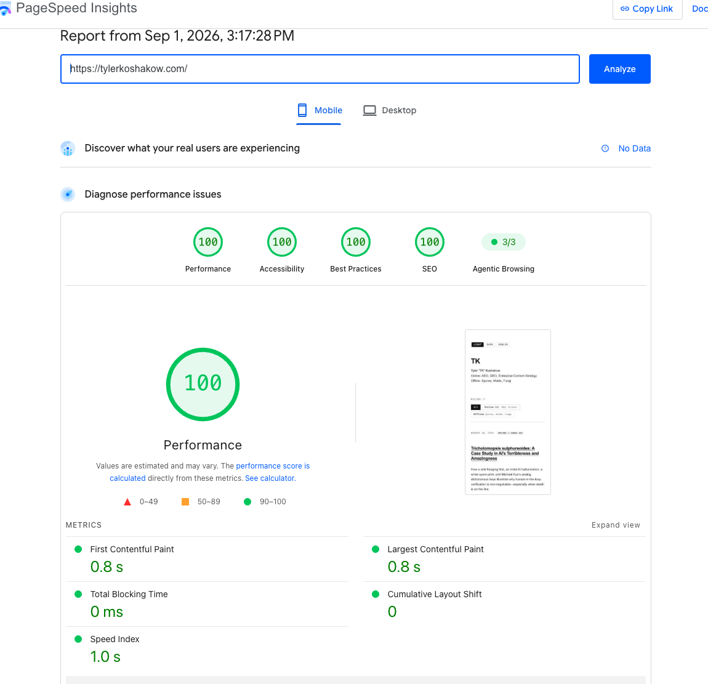

When building this site, the baseline requirement was simple: a clean 100/100 on Google PageSpeed Insights across both mobile and desktop. No bloated frameworks, no render-blocking waterfalls, just fast HTML and semantic CSS.
Then came time to add the standard business plumbing: Google Search Console (GSC) for search visibility and Google Analytics 4 (GA4) for telemetry. I wanted to measure what happens to a pristine performance score when you add these basic foundational tools.
The outcome was immediate: following Google’s standard setup instructions for GA4 knocked our mobile performance score straight from 100 down to 84.
The Benchmark: What Happened and Why
We tested the integration in controlled phases, measuring mobile Core Web Vitals under throttled CPU and 4G network conditions. Here is the empirical scoreboard:
| Phase / Configuration | Mobile Score | Desktop Score | FCP | LCP | Total Blocking Time |
|---|---|---|---|---|---|
| Clean Baseline | 100 | 100 | 0.8 s | 1.1 s | 0 ms |
| + Google Search Console | 100 | 100 | 0.8 s | 1.1 s | 0 ms |
| + Standard GA4 (<head>) | 84 | 98 | 2.6 s | 3.5 s | 10 ms (128ms CPU) |
| + requestIdleCallback Loader | 89 | 100 | 1.0 s | 1.0 s | 450 ms |
| + Interaction-Driven GA4 | 98–100 | 100 | 0.9 s | 0.9 s | 0 ms |

1. Search Console: The Zero-Cost Digital Handshake
Adding Google Search Console had a net impact of exactly 0.00%. We verified ownership using an isolated root HTML file (google*.html). Because the verification file lives at a standalone URL that browsers never request during normal page visits, it adds zero bytes to the critical path, zero DOM elements, and zero JavaScript execution. DNS TXT verification works the exact same way.
2. The Google Tag Paradox: Why the Default Snippet Tanks Speed
Google Analytics was another story. Google’s setup wizard tells you to paste an async script tag directly into the <head>. When we did that, our mobile performance dropped by 16 points. First Contentful Paint (FCP) slowed from 0.8s to 2.6s, Largest Contentful Paint (LCP) stretched from 1.1s to 3.5s, and Lighthouse flagged 72 KiB of unused JavaScript alongside 128ms of main-thread CPU bootup time.
It seems counterintuitive that Google’s own snippet degrades Google’s own speed tool. But it comes down to a clear split in incentives:
- The Analytics Team optimizes for foolproof data capture across broken websites, legacy browsers, and non-technical site owners. They want the tracking library fetched as early as humanly possible, regardless of network cost.
- The Chrome & Search Teams optimize for user experience and Core Web Vitals. They measure the reality of mobile devices with constrained CPUs and mobile radio bandwidth.
Even with an async attribute, browsers prioritize scripts discovered in the <head> during the initial preload scan. Downloading Google’s ~100 KB+ bundle directly competes with critical CSS, delaying layout and visual rendering.
The Engineering Fix: Interaction-Driven Sequencing
The solution doesn’t require dropping analytics. It just requires working with how Google Analytics actually handles data.
Google designed window.dataLayer as a First-In, First-Out (FIFO) queue. You can push events into the array immediately via lightweight inline JavaScript with zero network overhead. The external gtag.js binary doesn’t actually need to be downloaded until someone starts interacting with the page.
We first tested a naive deferred loader using requestIdleCallback. While FCP and LCP recovered to 1.0s, executing the heavy Google bundle once idle triggered a 450ms Total Blocking Time (TBT) spike on mobile CPU throttling, holding the score at 89.
The cleaner approach separates event queuing from script execution:
- Instant In-Memory Queue: Initialize
dataLayersynchronously inline so pageviews and configuration parameters are captured instantly in memory (0 KB network, 0 ms main-thread delay). - Passive Interaction Dispatch: Attach passive event listeners for user intent (
pointerdown,scroll,touchstart,keydown). The moment a real user touches the screen or moves their mouse,gtag.jsis dynamically injected withfetchpriority="low", following modern script sequencing patterns. - Fallback Safety Net: A background fallback timer and a
visibilitychangelistener ensure that even passive readers or quick tab-switchers are recorded without impacting initial Lighthouse audits.
How This Applies to Real Business & E-Commerce Sites
This challenge is not unique to personal websites. In high-stakes environments like e-commerce, where every 100ms of mobile latency measurably degrades conversion rates, loading raw tracking scripts in the document head is an immediate liability.
Performance engineers in the e-commerce space have used variations of this technique for years. Depending on your tech stack, you don’t necessarily have to write custom vanilla JavaScript from scratch:
- Off-the-Shelf Script Delay Plugins: In CMS ecosystems like WordPress and WooCommerce, performance plugins (such as WP Rocket, Perfmatters, and FlyingPress) offer built-in “Delay JavaScript Execution” features that automate this exact interaction-trigger pattern for GA4, Meta Pixels, and chat widgets.
- Web Worker Proxies: Solutions like Partytown run third-party tracking scripts entirely off the main thread in background Web Workers, keeping the main browser thread clear for user input.
- Edge & Server-Side Tagging: Cloudflare Zaraz and server-side Google Tag Manager offload tag processing from the client’s phone to edge servers.
While I haven’t personally tested or used every specific proprietary plugin, the underlying pattern is an established industry standard: never execute non-critical third-party JavaScript during the critical rendering path.
The Real Takeaway
You don’t have to trade tracking for speed. But you also can’t assume default copy-paste code from a giant tech vendor is optimized for performance—even when that vendor is Google. Holding events in memory and waiting for user input keeps your Core Web Vitals clean while still getting the data your team needs. (If you want to read more about why clean telemetry matters to leadership, see my previous piece on AEO and C-suite reporting).